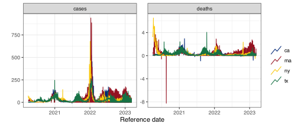
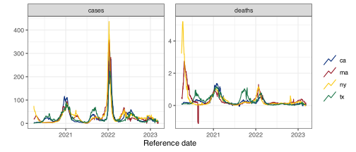
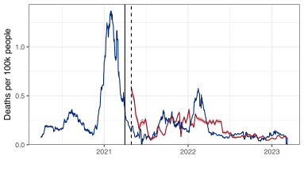
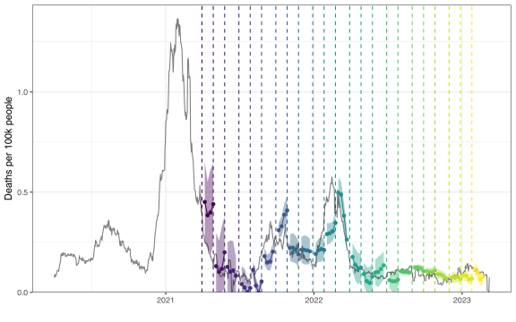

Forecasting with {epipredict}
InsightNet Forecasting Workshop 2024
Ailce Cima, Rachel Lobay, Daniel McDonald, Ryan Tibshirani
with thanks to Delphi Tooling & Forecasting Team: Logan Brooks, Nat DeFries, Dmitry Shemetov, David Webber
12 December – Afternoon
Outline
{epipredict}Pre-processing
Fit and Predict with
arx_forecaster()Customizing
arx_forecaster()Forecasting with Versioned Data
Building a Forecaster
A Flu Forecaster
{epipredict}
{epipredict}
https://cmu-delphi.github.io/epipredict
Installation
What {epipredict} provides (i)
Basic and easy to use “canned” forecasters:
Baseline flat forecaster
Autoregressive forecaster (ARX)
Autoregressive classifier
CDC FluSight flatline forecaster
What {epipredict} provides (ii)
A framework for creating custom forecasters out of modular components.
There are four types of components:
Preprocessor: do things to the data before model training
Trainer: train a model on data, resulting in a fitted model object
Predictor: make predictions, using a fitted model object
Postprocessor: do things to the predictions before returning
Pre-processing
Examples of pre-processing
EDA type stuff
- Making locations/signals commensurate (scaling)
- Dealing with revisions
- Detecting and removing outliers
- Imputing or removing missing data
Feature engineering
- Creating lagged predictors
- Day of Week effects
- Rolling averages for smoothing
- Lagged differences
- Growth rates instead of raw signals
- The sky’s the limit
Get the data
library(epidatr)
library(epiprocess)
library(epipredict)
cases <- pub_covidcast(
source = "jhu-csse",
signals = "confirmed_incidence_num",
time_type = "day",
geo_type = "state",
time_values = epirange(20200401, 20230401),
geo_values = "*") |>
select(geo_value, time_value, cases = value)
deaths <- pub_covidcast(
source = "jhu-csse",
signals = "deaths_incidence_num",
time_type = "day",
geo_type = "state",
time_values = epirange(20200401, 20230401),
geo_values = "*") |>
select(geo_value, time_value, deaths = value)Create an epi_df
An `epi_df` object, 60,036 x 4 with metadata:
* geo_type = state
* time_type = day
* as_of = 2024-11-21 13:21:56.503191
# A tibble: 60,036 × 4
geo_value time_value cases deaths
* <chr> <date> <dbl> <dbl>
1 ak 2020-04-01 13 0
2 al 2020-04-01 112 4
3 ar 2020-04-01 61 2
4 as 2020-04-01 0 0
5 az 2020-04-01 124 7
6 ca 2020-04-01 1254 29
7 co 2020-04-01 4655 388
8 ct 2020-04-01 429 16
9 dc 2020-04-01 91 0
10 de 2020-04-01 49 10
# ℹ 60,026 more rowsPre-processing: data scaling
Scale cases and deaths by population and multiply by 100K
Scaled COVID cases and deaths
Pre-processing: smoothing
Smooth the data by computing 7-day averages of cases and deaths for each state
Scaled and smoothed COVID cases deaths
Pre-processing: fix outliers and negative values
Code
detection_methods <- dplyr::bind_rows(
dplyr::tibble(method = "rm", args = list(list(detect_negatives = TRUE)), abbr = "rm")#,
#dplyr::tibble(method = "stl", args = list(list(detect_negatives = TRUE, seasonal_period = 7)),
# abbr = "stl_seasonal")
)
deaths_outlr <- df |>
group_by(geo_value) |>
mutate(outlier_info = detect_outlr(x = time_value,
y = deaths,
methods = detection_methods,
combiner = "median"
)) |>
ungroup() |>
unnest(outlier_info)
deaths_outlr |>
filter(geo_value %in% c("ca", "ma", "ny", "tx")) |>
ggplot(aes(x = time_value)) +
geom_line(aes(y = deaths), linetype = 2) +
geom_line(aes(y = combined_replacement, col = geo_value)) +
geom_hline(yintercept = 0, linetype = 3) +
facet_wrap(vars(geo_value), scales = "free_y") +
scale_color_viridis_d() +
labs(x = "", y = "Covid-19 deaths per 100k people")
Fit and Predict with arx_forecaster
Fit ARX on training set
Back to the ARX(1) model for COVID deaths: \(\quad \hat y_{t+28} = \hat\phi + \hat\phi_0 y_{t} + \hat\beta_0 x_{t}\)
Only focus on California (for now)
Using
{epipredict}
# split into train and test
ca <- df |> filter(geo_value == "ca")
t0_date <- as.Date('2021-04-01')
train <- ca |> filter(time_value <= t0_date)
test <- ca |> filter(time_value > t0_date)
# fit ARX
epi_arx <- arx_forecaster(epi_data = train |> as_epi_df(),
outcome = "deaths",
predictors = c("cases", "deaths"),
trainer = linear_reg() |> set_engine("lm"),
args_list = arx_args_list(lags = 0, ahead = 28,
quantile_levels = c(0.1, 0.9)))arx_forecaster output
A fitted model object which can be used any time in the future to create forecasts (
$epi_workflow).A forecast (point prediction + interval) for 28 days after the last available time value in the data (
$predictions).
arx_forecaster output
══ A basic forecaster of type ARX Forecaster ═══════════════════════════════════This forecaster was fit on 2024-11-12 08:50:39.Training data was an <epi_df> with:• Geography: state,• Other keys: ,• Time type: day,• Using data up-to-date as of: 2024-11-06 08:50:44.• With the last data available on 2021-04-01── Predictions ─────────────────────────────────────────────────────────────────A total of 1 prediction is available for• 1 unique geographic region,• At forecast date: 2021-04-01,• For target date: 2021-04-29,Extract fitted object
══ Epi Workflow [trained] ══════════════════════════════════════════════════════Preprocessor: RecipeModel: linear_reg()Postprocessor: Frosting── Preprocessor ────────────────────────────────────────────────────────────────6 Recipe steps.1. step_epi_lag()2. step_epi_lag()3. step_epi_ahead()4. step_naomit()5. step_naomit()6. step_training_window()── Model ───────────────────────────────────────────────────────────────────────
Call:
stats::lm(formula = ..y ~ ., data = data)
Coefficients:
(Intercept) lag_0_cases lag_0_deaths
0.076884 0.009858 0.200700 ── Postprocessor ───────────────────────────────────────────────────────────────5 Frosting layers.1. layer_predict()2. layer_residual_quantiles()3. layer_add_forecast_date()4. layer_add_target_date()5. layer_threshold()$epi_workflow
Contains information on
Pre-processing steps automatically performed by
arx_forecaster(e.g. compute lags of the predictors)Fitted model
Post-processing steps automatically performed by
arx_forecaster(e.g. compute quantiles)
Extract predictions
# A tibble: 1 × 5
geo_value .pred .pred_distn forecast_date target_date
<chr> <dbl> <dist> <date> <date>
1 ca 0.219 quantiles(0.22)[2] 2021-04-01 2021-04-29 Note
.pred_dstn is actually a “distribution”, parameterized by its quantiles.
Extract predictions
We can extract the distribution into a “long” epi_df
# A tibble: 2 × 6
geo_value .pred values quantile_levels forecast_date target_date
<chr> <dbl> <dbl> <dbl> <date> <date>
1 ca 0.218 0.137 0.1 2021-04-01 2021-04-29
2 ca 0.218 0.300 0.9 2021-04-01 2021-04-29 or into a “wide” epi_df
Predict with fitted ARX (split-sample)
arx_forecasterfits a model to the training set, and outputs only one prediction (for time \(t_0+h\)).To get predictions for the test set:
An `epi_df` object, 707 x 6 with metadata:
* geo_type = state
* time_type = day
* as_of = 2024-11-06 08:50:44.00687
# A tibble: 707 × 6
geo_value time_value .pred .pred_distn forecast_date target_date
* <chr> <date> <dbl> <dist> <date> <date>
1 ca 2021-04-02 0.217 quantiles(0.22)[2] 2021-04-01 2021-04-29
2 ca 2021-04-03 0.203 quantiles(0.2)[2] 2021-04-01 2021-04-29
3 ca 2021-04-04 0.197 quantiles(0.2)[2] 2021-04-01 2021-04-29
4 ca 2021-04-05 0.202 quantiles(0.2)[2] 2021-04-01 2021-04-29
5 ca 2021-04-06 0.199 quantiles(0.2)[2] 2021-04-01 2021-04-29
6 ca 2021-04-07 0.196 quantiles(0.2)[2] 2021-04-01 2021-04-29
7 ca 2021-04-08 0.193 quantiles(0.19)[2] 2021-04-01 2021-04-29
8 ca 2021-04-09 0.195 quantiles(0.2)[2] 2021-04-01 2021-04-29
9 ca 2021-04-10 0.209 quantiles(0.21)[2] 2021-04-01 2021-04-29
10 ca 2021-04-11 0.214 quantiles(0.21)[2] 2021-04-01 2021-04-29
# ℹ 697 more rowsPredict with ARX (when re-fitting)
In practice, if we want to re-train the forecasters as new data arrive, we fit and predict combining arx_forecaster with epi_slide.
Predict with ARX (re-fitting on trailing window)
h <- 28 #horizon
w <- 120 + h #trailing window length
n <- nrow(ca) #time-series length
# Specify the forecast dates
fc_time_values <- seq(from = t0_date, to = ca$time_value[n]-h, by = "1 day")
# Slide the arx_forecaster
pred_arx <- ca |>
epi_slide(
~ arx_forecaster(epi_data = .x,
outcome = "deaths",
predictors = c("cases", "deaths"),
trainer = linear_reg() |> set_engine("lm"),
args_list = arx_args_list(lags = 0, ahead = h,
quantile_levels = c(0.1, 0.9))
)$predictions |>
pivot_quantiles_wider(.pred_distn),
.window_size = w,
.ref_time_values = fc_time_values
)Predict with ARX
Note (window length)
We set \(w = 120 + h\) to match the window size of the ARX model we fitted manually. Previously, when considering a window from \(t-w\) to \(t\), we had access to all outcomes in that window, and to all predictors between \(t-w-h\) and \(t-h\). (That’s because we lagged \(x\) before applying the window.) So we were “cheating” by saying that the trailing window had length \(w=120\), as its actual size was \(120+h\)!
Note (all past)
The method fitting on all past data up to the forecasting date can be implemented by setting:
.window_size = Inf in epi_slide.
Predict with ARX (re-fitting on trailing window)
An `epi_df` object, 680 x 9 with metadata:
* geo_type = state
* time_type = day
* as_of = 2024-11-21 09:53:50.8601
# A tibble: 680 × 9
# Groups: geo_value [1]
geo_value time_value cases deaths .pred forecast_date target_date `0.1` `0.9`
* <chr> <date> <dbl> <dbl> <dbl> <date> <date> <dbl> <dbl>
1 ca 2021-04-01 6.77 0.375 0.332 2021-04-01 2021-04-29 0.219 0.444
2 ca 2021-04-02 6.93 0.340 0.331 2021-04-02 2021-04-30 0.221 0.442
3 ca 2021-04-03 6.79 0.293 0.325 2021-04-03 2021-05-01 0.215 0.435
4 ca 2021-04-04 6.51 0.281 0.321 2021-04-04 2021-05-02 0.207 0.435
5 ca 2021-04-05 6.87 0.284 0.324 2021-04-05 2021-05-03 0.198 0.451
6 ca 2021-04-06 6.97 0.267 0.323 2021-04-06 2021-05-04 0.198 0.448
7 ca 2021-04-07 6.92 0.253 0.319 2021-04-07 2021-05-05 0.192 0.446
8 ca 2021-04-08 6.97 0.250 0.317 2021-04-08 2021-05-06 0.190 0.444
9 ca 2021-04-09 7.07 0.249 0.316 2021-04-09 2021-05-07 0.190 0.443
10 ca 2021-04-10 8.33 0.246 0.326 2021-04-10 2021-05-08 0.200 0.451
# ℹ 670 more rowsPredict with ARX (re-fitting on trailing window)

MAE MASE
time series CV + trailing 0.07415961 796.6647Customizing arx_forecaster
Simple adjustments
Modify
predictorsto add/drop predictorse.g. drop
deathsfor regression with a lagged predictor, or dropcasesto get AR modeldefault:
predictors = outcome
Simple adjustments
Modify
trainerto use a model that is notlm(default)e.g.
trainer = quantile_reg()can use any
{parsnip}models, see list
Simple adjustments
- Modify
arx_args_listto change lags, horizon, quantile levels, …
arx_args_list(
lags = c(0L, 7L, 14L),
ahead = 7L,
n_training = Inf,
forecast_date = NULL,
target_date = NULL,
adjust_latency = c("none", "extend_ahead", "extend_lags", "locf"),
warn_latency = TRUE,
quantile_levels = c(0.05, 0.95),
symmetrize = TRUE,
nonneg = TRUE,
quantile_by_key = character(0L),
check_enough_data_n = NULL,
check_enough_data_epi_keys = NULL,
...
)Modifying the ARX forecaster
Change predictors: hospitalizations instead of cases
hhs <- pub_covidcast(
source = "hhs",
signals = "confirmed_admissions_covid_1d_prop_7dav",
time_type = "day",
geo_type = "state",
time_values = epirange(20200401, 20230401),
geo_values = "*") |>
select(geo_value, time_value, hospitalizations = value)
df_extend <- left_join(df, hhs, by = c("time_value", "geo_value")) |>
as_epi_df()
ca_extend <- df_extend |> filter(geo_value == "ca")Modifying the ARX forecaster
Change predictors: hospitalizations instead of cases
# Specify the forecast dates
n = nrow(ca_extend)
fc_time_values <- seq(from = t0_date, to = ca_extend$time_value[n]-h, by = "1 day")
# Slide the arx_forecaster
pred_arx_hosp <- ca_extend |>
epi_slide(
~ arx_forecaster(epi_data = .x,
outcome = "deaths",
predictors = c("deaths", "hospitalizations"),
trainer = linear_reg() |> set_engine("lm"),
args_list = arx_args_list(lags = 0, ahead = 28,
quantile_levels = c(0.1, 0.9))
)$predictions |>
pivot_quantiles_wider(.pred_distn),
.window_size = w,
.ref_time_values = fc_time_values
)Predictions (hospitalizations instead of cases in predictor set)

MAE MASE
0.04617467 496.0346Modifying the ARX forecaster
Add more lags
pred_arx_more_lags <- ca_extend |>
epi_slide(
~ arx_forecaster(epi_data = .x,
outcome = "deaths",
predictors = c("deaths", "hospitalizations"),
trainer = linear_reg() |> set_engine("lm"),
args_list = arx_args_list(
lags = c(0, 7, 14),
ahead = 28,
quantile_levels = c(0.1, 0.9))
)$predictions |>
pivot_quantiles_wider(.pred_distn),
.window_size = w,
.ref_time_values = fc_time_values
)Predictions (more lags)

MAE MASE
0.06634971 712.7663Modifying the ARX forecaster
Change trainer
pred_arx_rf <- ca_extend |>
epi_slide(
~ arx_forecaster(epi_data = .x,
outcome = "deaths",
predictors = c("deaths", "hospitalizations"),
trainer = parsnip::rand_forest(mode = "regression"),
args_list = arx_args_list(
lags = 0,
#lags = c(0, 7, 14), # worse predictions
ahead = 28,
quantile_levels = c(0.1, 0.9))
)$predictions |>
pivot_quantiles_wider(.pred_distn),
.window_size = w,
.ref_time_values = fc_time_values
)Predictions (trained using random forest)
 MAE MASE
0.06351451 682.309Modifying the ARX forecaster
Geo-pooling
pred_arx_geo_pool <- df_extend |>
filter(time_value > as.Date("2020-06-01") &
!geo_value %in% c("as", "gu", "mp")) |>
epi_slide(
~ arx_forecaster(epi_data = .x,
outcome = "deaths",
predictors = c("deaths", "hospitalizations"),
trainer = linear_reg() |> set_engine("lm"),
args_list = arx_args_list(
lags = 0,
ahead = 28,
quantile_levels = c(0.1, 0.9))
)$predictions |>
pivot_quantiles_wider(.pred_distn),
.window_size = w,
.ref_time_values = fc_time_values
)Predictions (geo-pooling)
Modifying the ARX forecaster
Multiple horizons
fc_time_values <- seq(from = t0_date, to = as.Date("2023-02-01"), by = "1 month")
pred_h_days_ahead <- function(epi_df, ahead = 7) {
epi_df |>
epi_slide(
~ arx_forecaster(epi_data = .x,
outcome = "deaths",
predictors = c("deaths", "hospitalizations"),
trainer = linear_reg() |> set_engine("lm"),
args_list = arx_args_list(
lags = 0,
ahead = ahead,
quantile_levels = c(0.1, 0.9))
)$predictions |>
pivot_quantiles_wider(.pred_distn),
.window_size = w,
.ref_time_values = fc_time_values
)
}
h <- c(7, 14, 21, 28)
forecasts <- bind_rows(map(h, ~ pred_h_days_ahead(ca_extend, ahead = .x)))Predictions (multiple horizons)
Forecasting with Versioned Data
Versioned data
→ An `epi_archive` object, with metadata:
ℹ Min/max time values: 2020-04-01 / 2023-01-31
ℹ First/last version with update: 2021-04-01 / 2023-02-01
ℹ Versions end: 2023-02-01
ℹ A preview of the table (92197 rows x 5 columns):
version time_value geo_value cases deaths
1: 2021-04-01 2020-04-01 ak NA NA
2: 2021-04-01 2020-04-02 ak NA NA
3: 2021-04-01 2020-04-03 ak NA NA
4: 2021-04-01 2020-04-04 ak NA NA
5: 2021-04-01 2020-04-05 ak NA NA
---
92193: 2023-02-01 2023-01-27 wy 4.61203 0.17172453
92194: 2023-02-01 2023-01-28 wy 4.61203 0.17172453
92195: 2023-02-01 2023-01-29 wy 4.61203 0.17172453
92196: 2023-02-01 2023-01-30 wy 4.61203 0.17172453
92197: 2023-02-01 2023-01-31 wy -14.74378 0.04906416Version-aware forecasting with geo-pooling
forecast_dates <- seq(from = t0_date, to = as.Date("2023-02-01"), by = "1 month")
h <- c(7, 14, 21, 28)
forecast_k_days_ahead <- function(epi_archive, forecast_dates, ahead = 7) {
epi_archive |>
epix_slide(
~ arx_forecaster(
.x,
outcome = "deaths",
predictors = c("cases", "deaths"),
trainer = linear_reg() |> set_engine("lm"),
args_list = arx_args_list(lags = 0, ahead = ahead,
quantile_levels = c(0.1, 0.9))
)$predictions |> pivot_quantiles_wider(.pred_distn),
.before = 120,
.versions = forecast_dates
)
}
forecasts <- bind_rows(map(h, ~ forecast_k_days_ahead(us_data, forecast_dates, ahead = .x)))Version-aware forecasting with geo-pooling

Building a forecaster
Philosophy of forecasting
We should build up modular components
Be able to add/remove layers of complexity sequentially
Preprocessor: do things to the data before model training
Trainer: train a model on data, resulting in a fitted model object
Predictor: make predictions, using a fitted model object
Postprocessor: do things to the predictions before returning
Fit a forecaster from scratch
So far, we performed some manual pre-processing, and then relied on a canned forecaster to automatically perform more pre-processing, training, predicting, and post-processing.
What if we want more direct control on each single step?
Fit a forecaster from scratch
# A preprocessing "recipe" that turns raw data into features / response
r <- epi_recipe(ca) |>
step_epi_lag(cases, lag = c(0, 7, 14)) |>
step_epi_lag(deaths, lag = c(0, 7, 14)) |>
step_epi_ahead(deaths, ahead = 28) |>
step_epi_naomit()
# Training engine
e <- quantile_reg(quantile_levels = c(.1, .5, .9))
# A post-processing routine describing what to do to the predictions
f <- frosting() |>
layer_predict() |>
layer_threshold(.pred, lower = 0) |> # predictions / intervals should be non-negative
layer_add_target_date() |>
layer_add_forecast_date()
# Bundle up the preprocessor, training engine, and postprocessor
# We use quantile regression
ewf <- epi_workflow(r, e, f)
# Fit it to data (we could fit this to ANY data that has the same format)
trained_ewf <- ewf |> fit(ca)
# examines the recipe to determine what we need to make the prediction
latest <- get_test_data(r, ca)
# we could make predictions using the same model on ANY test data
preds <- trained_ewf |> predict(new_data = latest)A Flu Forecaster
Get the data
Build forecaster
# A preprocessing "recipe" that turns raw data into features / response
r <- epi_recipe(flu) |>
#drop_non_seasons() |>
step_population_scaling(
hosp,
df = epidatasets::state_census,
df_pop_col = "pop",
create_new = FALSE,
rate_rescaling = 1e5,
by = c("geo_value" = "abbr")) |>
step_epi_lag(hosp, lag = c(0, 7, 14)) |>
step_epi_ahead(hosp, ahead = 14) |>
step_epi_naomit()
# Training engine
e <- quantile_reg(quantile_levels = c(0.01, 0.025, 1:19 / 20, 0.975, 0.99)) # 23 ForecastHub quantiles
# A post-processing routine describing what to do to the predictions
f <- frosting() |>
layer_predict() |>
layer_threshold(.pred, lower = 0) |> # predictions / intervals should be non-negative
layer_population_scaling(
.pred,
df = epidatasets::state_census,
df_pop_col = "pop",
create_new = FALSE,
rate_rescaling = 1e5,
by = c("geo_value" = "abbr")) |>
layer_add_target_date() |>
layer_add_forecast_date()
# Bundle up the preprocessor, training engine, and postprocessor
# We use quantile regression
ewf <- epi_workflow(r, e, f)
# Fit it to data (we could fit this to ANY data that has the same format)
trained_ewf <- ewf |> fit(flu)
# examines the recipe to determine what we need to make the prediction
latest <- get_test_data(r, flu)
# we could make predictions using the same model on ANY test data
preds <- trained_ewf |> predict(new_data = latest)Predictions
# A tibble: 54 × 27
geo_value time_value target_date forecast_date `0.01` `0.025` `0.05` `0.1`
<chr> <date> <date> <date> <dbl> <dbl> <dbl> <dbl>
1 ak 2024-04-26 2024-05-10 2024-04-26 0 0 0 0
2 al 2024-04-26 2024-05-10 2024-04-26 0 0 0 0
3 ar 2024-04-26 2024-05-10 2024-04-26 0 0 0 0
4 as 2024-04-26 2024-05-10 2024-04-26 0 0 0 0
5 az 2024-04-26 2024-05-10 2024-04-26 0 0 0 0
6 ca 2024-04-26 2024-05-10 2024-04-26 0 0 0 0
7 co 2024-04-26 2024-05-10 2024-04-26 0 0 0 0
8 ct 2024-04-26 2024-05-10 2024-04-26 0 0 0 0
9 dc 2024-04-26 2024-05-10 2024-04-26 0 0 0 0
10 de 2024-04-26 2024-05-10 2024-04-26 0 0 0 0
# ℹ 44 more rows
# ℹ 19 more variables: `0.15` <dbl>, `0.2` <dbl>, `0.25` <dbl>, `0.3` <dbl>,
# `0.35` <dbl>, `0.4` <dbl>, `0.45` <dbl>, `0.5` <dbl>, `0.55` <dbl>,
# `0.6` <dbl>, `0.65` <dbl>, `0.7` <dbl>, `0.75` <dbl>, `0.8` <dbl>,
# `0.85` <dbl>, `0.9` <dbl>, `0.95` <dbl>, `0.975` <dbl>, `0.99` <dbl>
Forecasting — cmu-delphi/insightnet-workshop-2024